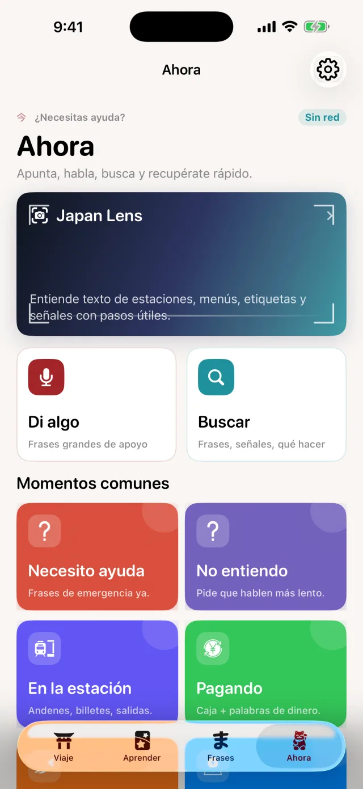
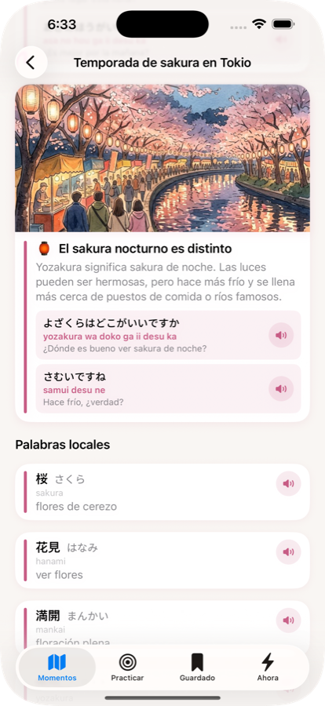
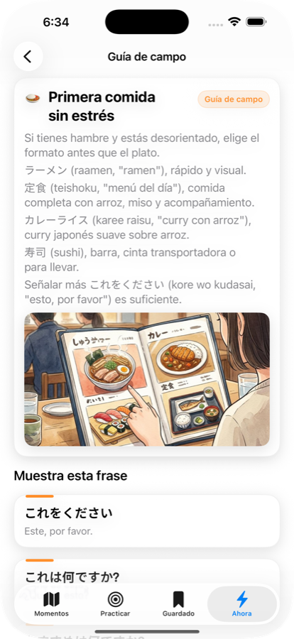

Arrive Japan ayuda a viajeros primerizos a prepararse para momentos reales en Japón: aeropuertos, trenes, restaurantes, hoteles, tiendas, señales, pronunciación y frases de emergencia. Aprende antes de viajar y úsala sin conexión cuando el Wi-Fi no está garantizado.
Arrive Japan crea una ruta práctica por frases esenciales y japonés inicial, con repaso diario diseñado alrededor de tu viaje.
Cuando ya estás allá, la app se enfoca en ayuda rápida y práctica: qué decir, qué significa una señal y qué hacer después.


